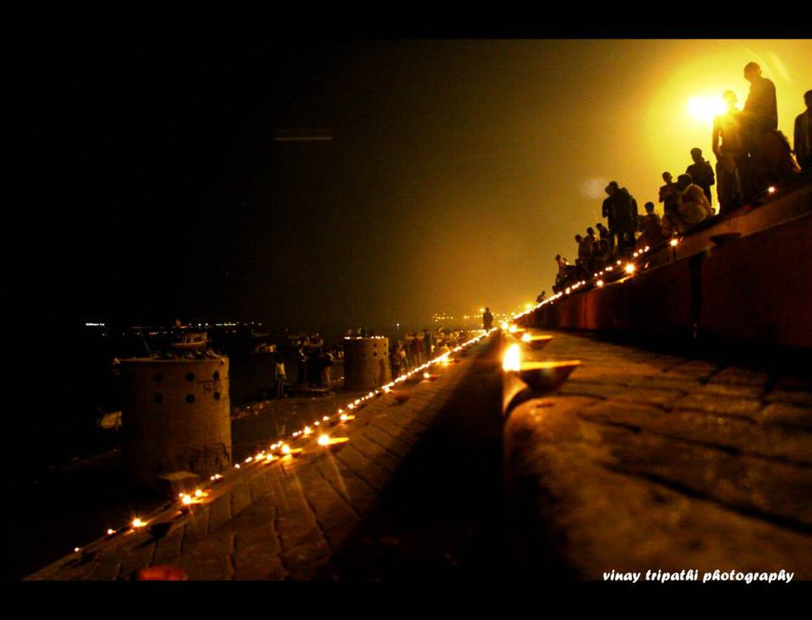

Standing at the geographical and theological heart of Varanasi, the Kashi Vishwanath Temple is dedicated to Shiva in his manifestation as Vishwanath or Vishveshwara—the "Ruler of the Universe." Enshrining one of the twelve canonical Jyotirlingas (pillars of divine light), the temple has served for millennia as Hinduism's ultimate center of devotion, attracting pilgrims who believe that a single darshan here liberates the soul from the relentless cycle of rebirth (samsara).
A Chronicle of Destruction and Resilience
Few monuments in South Asia have endured as turbulent an architectural existence as Kashi Vishwanath. Ancient Sanskrit scriptures including the Skanda Purana celebrate the shrine's ancient prominence. The original pre-medieval temple was plundered and razed in 1194 CE by the armies of Qutb-ud-din Aibak. It was subsequently rebuilt during the reign of the Delhi Sultan Iltutmish by Gujarati merchants, only to face destruction again under the Sharqi sultans of Jaunpur in the fifteenth century.
During the reign of Mughal Emperor Akbar in 1585, the temple was reconstructed with lavish opulence by his finance minister, Raja Todar Mal, under the intellectual supervision of the scholar Narayana Bhatta. However, in 1669, Emperor Aurangzeb ordered the complex demolished, constructing the Gyanvapi Mosque upon a portion of its foundational plinth. The revered lingam was safeguarded by the resident chief priest, who famously leapt with the sacred stone into the adjacent Gyan Vapi (the Well of Wisdom) to prevent its desecration.
Key Historical Facts
- Presiding Deity: Shiva as Shri Vishwanath / Vishveshwara (Jyotirlinga)
- Current Structure Built: 1780 CE by Maharani Ahilyabai Holkar of Indore
- Golden Plating: 1839 CE; one tonne of pure gold gifted by Maharaja Ranjit Singh of Punjab
- Architectural Form: Nagara temple style with stepped shikhara spires and inner silver sanctum
- Recent Transformation: The Kashi Vishwanath Corridor (inaugurated 2021) connecting the temple directly to Manikarnika and Lalita Ghats
The Golden Spires of Ahilyabai and Ranjit Singh
The sanctuary that stands today is the enduring monument of two legendary Indian rulers of the eighteenth and nineteenth centuries. In 1780, Maharani Ahilyabai Holkar, the ascetic ruler of the Maratha state of Indore, resolved to restore Varanasi's central sanctuary. She funded and oversaw the construction of the present sandstone temple immediately adjoining the Gyan Vapi compound.
Nearly sixty years later, in 1839, the Sikh Emperor Maharaja Ranjit Singh of Punjab donated one tonne of pure gold foil to plate the temple's fifty-one-foot-tall central spire (shikhara) and secondary dome, giving the shrine its popular epithet, the "Golden Temple." This extraordinary confluence of Maratha devotion, Sikh imperial patronage, and North Indian stone craftsmanship underscores the monument's pan-Indian cultural resonance.


The Modern Corridor & Sacred Rituals
Until recently, reaching the temple required navigating a labyrinth of claustrophobic, ancient lanes barely wide enough for two people to pass. In December 2021, the ambitious Kashi Vishwanath Dham Corridor was opened, expanding the temple precinct from around 3,000 square feet to over 500,000 square feet. The broad stone boulevard now links the inner sanctum directly to the riverfront at Lalita and Manikarnika Ghats, restoring the historic ritual connection whereby pilgrims can bathe in the Ganges before proceeding straight into the presence of the deity.
Inside the silver-clad garbhagriha (sanctum sanctorum), the Jyotirlinga is set in a silver reservoir bowl. Five distinct daily rituals (Aartis) punctuate the liturgical day: the Mangala Aarti before dawn at 03:00, the Bhog Aarti at noon, the Sandhya Aarti at 19:00, the Shringar Aarti at 21:00, and the concluding Shayan Aarti at 22:30, after which the sanctum is sealed until morning.
Visitor Information & Guidelines
- Timings
- Open daily from 02:30 to 23:00. General darshan is suspended during Aarti intervals.
- Security & Electronic Devices
- Strict security is enforced. Mobile phones, smart watches, leather items, cameras, and bags are prohibited inside the inner sanctum. Free deposit lockers are provided at all corridor entrances.
- Dress Code
- Traditional Indian attire is mandatory for touch-darshan (Sparsh Darshan): dhotis for men and sarees for women. Modest Western attire is allowed for general queue darshan.
- Access Routes
- Accessible via Gate 4 (Godowlia / Dashashwamedh side), Chowk Gate, or directly from the Ganges via the riverfront corridor entrance at Lalita Ghat.
Notice: Online token bookings for special darshan and Mangala Aarti can be reserved in advance through the Shri Kashi Vishwanath Special Area Development Board official portal to avoid extensive queue waiting times.